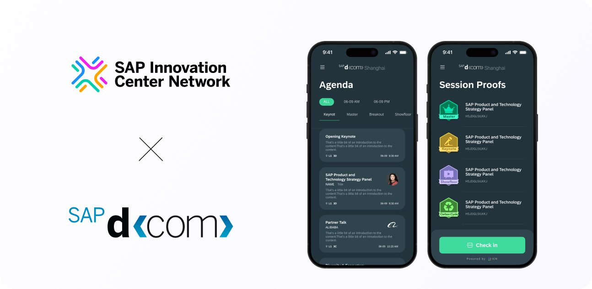

Wallet
Creating a seamless event experience through digital check-in and engagement design.
Highlights
Designed an end-to-end digital wallet experience for SAP DCOM Shanghai 2023, enabling agenda browsing, QR check-ins, badge collection, and lottery eligibility tracking for over 2,600 participants.
View Case Study